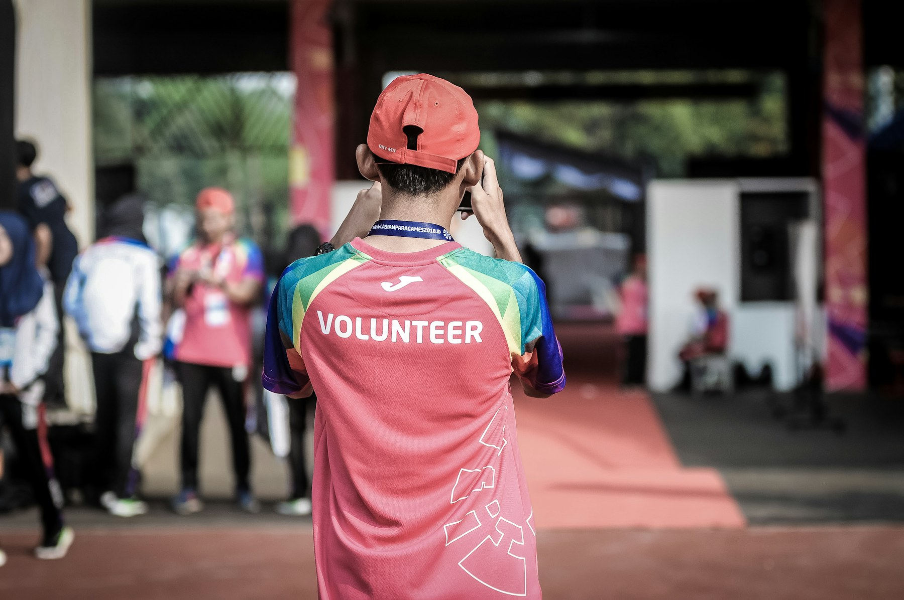

Formation
Préparer des parcours d'apprentissage liés au réemploi, aux chantiers et à la vie associative.
Créer des parcours vers l'emploi et favoriser l'inclusion sociale.

Ce pôle place l'humain au cœur de la revitalisation : apprendre, participer, reprendre confiance, acquérir des compétences et contribuer à des lieux utiles.
Préparer des parcours utiles aux personnes et aux territoires, sans annoncer de dispositif d'insertion avant structuration effective.
Solidarité & Insertion peut accompagner les chantiers liés à l'habitat, aux friches, à la matériauthèque et au repérage de terrain.
Les transitions écologiques, sociales et territoriales nécessitent des compétences, de l'engagement citoyen et des parcours accessibles aux personnes éloignées de l'emploi.
Créer des passerelles entre chantiers utiles, bénévolat, formation, découverte des métiers et insertion professionnelle.
Des habitants mobilisés, des compétences valorisées, des parcours mieux orientés et des chantiers plus inclusifs.
Identifier les envies, disponibilités, compétences et besoins d'accompagnement.
Préparer des modules pratiques liés au réemploi, au chantier, à l'animation et au territoire.
Construire des missions utiles, claires et sécurisées avec des référents.
Relier les expériences à des parcours bénévoles, professionnels ou citoyens.
Temps collectifs encadrés autour de lieux à remettre en vie.
Ateliers courts pour découvrir les gestes, métiers et méthodes utiles.
Missions de repérage, logistique, accueil, animation ou documentation.
Parcours à structurer avec les acteurs compétents, sans se substituer aux dispositifs existants.
Non. Les formations sont à construire avec des partenaires et un cadre pédagogique adapté.
Oui. Les missions pourront être variées : accueil, observation, communication, logistique, animation ou aide ponctuelle.
Non. Elle nécessite des partenariats, un encadrement, des moyens et une orientation adaptée aux personnes.
Mobiliser bénévoles et publics accompagnes sur des tâches compatibles avec la sécurité et les compétences disponibles.
Apprendre a trier, nettoyer, inventorier et préparer des matériaux pour un nouvel usage.
Relier renovation, réemploi, médiation et animation territoriale a des parcours professionnels possibles.
Les missions seront ouvertes progressivement selon les besoins réels et l'encadrement disponible.
Les projets de revitalisation ne concernent pas seulement les bâtiments. Ils peuvent créer des parcours : repérage, médiation, inventaire de matériaux, chantiers participatifs, entretien d’espaces, accueil du public, logistique, communication locale et formation aux métiers de la rénovation ou du réemploi.
L’enjeu social est fort dans un contexte où l’INSEE observe en 2023 une hausse du taux de pauvreté à 15,4 % en France métropolitaine, soit 9,8 millions de personnes vivant sous le seuil de pauvreté monétaire. Les difficultés de logement, de mobilité et d’emploi se renforcent mutuellement, surtout dans les territoires où les services sont éloignés.
Un logement mal situé, une absence de permis, des difficultés de santé, un manque de réseau professionnel ou un territoire sans offre de formation peuvent éloigner durablement de l’emploi. Les chantiers utiles au territoire peuvent recréer un cadre concret d’apprentissage et de confiance.
TVF peut proposer des missions graduées : observation, inventaire, ateliers de réemploi, chantiers encadrés, médiation avec les habitants et orientation vers les structures compétentes. L’association doit travailler avec les acteurs sociaux existants, sans se substituer à eux.
Exemple fictif à visée pédagogiqueUne équipe bénévole pourrait accompagner un atelier d’inventaire de matériaux avec des jeunes en découverte des métiers du bâtiment. Exemple fictif, uniquement pédagogique.
Ce serait une étape future à encadrer juridiquement. La première phase consiste à créer des missions, des partenariats et une méthode.
Parce que l’inventaire, la préparation, la logistique et les ateliers peuvent devenir des supports d’apprentissage concrets.
Chaque chantier doit être encadré, assuré, dimensionné et confié à des professionnels lorsque les tâches l’exigent.
TVF ne remplace pas les acteurs publics, techniques ou financiers existants. Sa valeur ajoutée consiste à coordonner les propriétaires, collectivités, associations, entreprises, artisans, financeurs, bénévoles, matériaux et biens vacants dans un parcours unique : observer, qualifier, conventionner, réhabiliter, remettre en usage et suivre l'impact.
La perte de temps, l'absence de portage et la difficulté à relier les acteurs peuvent bloquer des projets pourtant utiles.
| Missions | TVF | Autres organismes |
|---|---|---|
| Observation du patrimoine vacant | OuiRegrouper signalements, sources publiques et qualification locale. | Partielle selon les outils et périmètres. |
| Coordination globale des acteurs | OuiRelier propriétaires, collectivités, entreprises, associations et citoyens. | Pas toujours leur rôle principal. |
| Réemploi des matériaux | OuiOrienter les ressources vers des projets validés. | Variable selon les missions. |
| Mobilisation citoyenne | OuiSignalements, bénévolat, ateliers et antennes locales. | Variable selon les dispositifs. |
| Collectivités | OuiDiagnostic, convention, animation territoriale et suivi. | Oui pour plusieurs acteurs publics. |
| Propriétaires | OuiParcours de proposition de bien et convention d'usage. | Parfois, selon programme. |
| Investisseurs et mécènes | OuiProjets qualifiés, besoin documenté, impact suivi. | Rarement sur toute la chaîne. |
| Matériauthèque territoriale | OuiBanque de matériaux orientée vers l'utilité locale. | Non comme mission centrale. |
| Suivi d'impact | OuiIndicateurs réels, aucune donnée inventée. | Partiel selon le projet. |
Ces repères donnent le contexte. Ils ne sont pas des résultats TVF et doivent rester mis à jour avec les sources publiques.